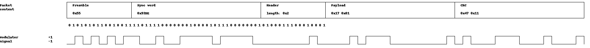

Packet Format¶
Messages on the proprietary PHY layer always have the following structure:
- Preamble
A series of alternating 0 and 1, used for automatic gain control.
- Sync Word
Determines the actual start of the message.
- Header
May contain length and address information for the receiver (optional).
- Payload
The message data.
- CRC
Verifier for message integrity (optional).
The below image shows an example for a proprietary packet with a 2-byte sync word and 2 bytes payload. The binary modulator signal represents either a positive or a negative frequency deviation from the chosen center frequency, because we are using a binary FSK modulation.
The RF core contains a flexible packet engine that can process two customizable packet formats:
A simple packet format
An advanced packet format
Table Table 10. compares both variants. The advanced packet format is a superset of the simple one: all features of the simple format are available and it is possible to achieve the same configuration, but the corresponding advanced radio operation commands are larger and can be more time-consuming to configure. SmartRF Studio exports only RF operations for the simple packet format.
Feature |
Simple packet format |
Advanced packet format |
|---|---|---|
Compatible radio operation commands |
|
|
Preamble |
|
|
Sync word |
|
|
Header |
|
|
Length information |
|
|
Address information |
|
|
Payload |
|
|
CRC |
|
|
Preamble¶
The preamble in the proprietary PHY consists of an alternating bit pattern
0101... and is used to determine the amplifier gain. Unlike in some older
TI devices, it is not needed for bit synchronization.
The preamble configuration is done in the setup command and is used for both
TX and RX operations. The length can be set between 1 and 30 bytes using the
nPreamBytes field. Additionally, 1 bit can be programmed by nPreamBytes
= 0 and 4 bits can be programmed by nPreamBytes = 31. The preamMode
field controls the preamble pattern. Either 0101.. or 1010.. is
possible:
rfc_CMD_PROP_RADIO_DIV_SETUP_t RF_cmdPropRadioDivSetup =
{
// ...
.preamConf.nPreamBytes = 4, // 4 bytes
.preamConf.preamMode = 0, // 0101...
// ...
};
Sync Word¶
The sync word is used by the packet engine to detect the packet start. For best performance, it must satisfy multiple criteria:
Its auto-correlation must have one high peak and only flat side lobes.
It must be long enough to be unique. 4 bytes are recommended.
Figure 26. compares the auto correlation of the default TI sync word 0x930B51DE and the bad sync word 0xAAAAAAAA.
Figure 26. Auto correlation of the sync word 0x930B51DE which is the default sync word for TI devices since CC1101.¶
Reducing the sync word length to less than 4 bytes and choosing a bad sync word will likely have a negative impact on the packet error rate. It should be only changed for a good reason and with the above correlation analysis.
CRC Calculation¶
When transmitting a packet, a checksum of the header and payload is appended to each packet. The receiver then calculates its own checksum and compares it to the received one. When both match, the packet was received correctly. Otherwise, it must have been corrupted during transmission. The CC13xx and CC26xx family implements a checksum based on CRC. Whether the packet header shall be considered for CRC calculation, can be specified for each TX and RX command.
The default CRC configuration on the CC13xx and CC26xx family in proprietary mode is similar to older devices in the CC1xxxx family:
CRC-16
Polynom : x^16 + x^15 + x^2 + 1 (0x8005)
Initialization: 0xFFFF
no input byte reversal
no output byte reversal
no XOR
An equivalent implementation in C can be found in the design note DN502
#define CRC16_POLY 0x8005
UINT16 culCalcCRC(BYTE crcData, UINT16 crcReg) {
UINT8 i;
for (i = 0; i < 8; i++) {
if (((crcReg & 0x8000) >> 8) ^ (crcData & 0x80)) {
crcReg = (crcReg << 1) ^ CRC16_POLY;
} else {
crcReg = (crcReg << 1);
}
crcData <<= 1;
}
return crcReg;
}// culCalcCRC
//----------------------------------------------------------------
// Example of Usage
#define CRC_INIT 0xFFFF
UINT8 txBuffer = {0, 1, 2, 3, 4, 5};
UINT16 checksum;
UINT8 i;
checksum = CRC_INIT; // Init value for CRC calculation
for (i = 0; i < sizeof(txBuffer); i++) {
checksum = culCalcCRC(txBuffer[i], checksum);
}
Overrides¶
Preamble, sync and CRC settings are set through the RF commands APIs. In addition some settings are available through overrides. The overrides should be placed at the end of the override list but before the last (uint32_t)0xFFFFFFFF.
Preamble¶
If a different preamble than 0x55 or 0xAA is need, the following override can be used:
//Preamble: 0x33 (uint32_t) 0x33330043
//Preamble: 0xCC (uint32_t) 0xCCCC0043
Sync Word Qualifier¶
The sync word is selectable to have a length from 8 bits to 32 bits. This is set
in CMD_PROP_RADIO_DIV_SETUP.nSwBits.
The sync word threshold could be set with the following override:
HW_REG_OVERRIDE(0x5114,0xYYZZ)
where YY and ZZ is the threshold for the two correlators. For simplicity the two thresholds can be set equal. Higher value is stricter. The default sync threshold is given by:
For the nominal 50 kbps setting given in SmartRF Studio the correlator based sync word search is followed by a strict sync word search meaning that all bit have to be equal. If a different patch is used or Manchester is selected the strict sync word search may be turned off and a stricter threshold has to be set to avoid false sync.
CRC polynomial¶
Change CRC length :
The default CRC length is 16 bits (CRC-16)
Example: How to use an 8 bits CRC instead:
static uint32_t overrides[] =
{
//...
/* Override numCrcBits = 0x08 */
(uint32_t) 0x00088113,
//...
}
The new length is the 2 MSB bytes (0x0008) and 0x8113 is the address where the length is placed.
Change CRC polynomial
The default polynomial:
crcPoly = 0x80050000 (= 0x8005 = x^16 + x^15 + x^2 + 1 = CRC-16-IBM in normal form)
Example: How to use polynomial 0x07 (= x^8 + x^2 + x + 1 = CRC-8-CCITT in normal form) instead, for 8-bit CRC generation:
static uint32_t overrides[] =
{
//...
/* Override CRC polynomial = x^8 + x^2 + x + 1 = 0x07 (PHAPOLY1 = 0x07000000) */
HW32_ARRAY_OVERRIDE(0x2004,1),
(uint32_t) 0x07000000, // Polynomial is stored in the MSBs of the 32 bits hardware register
//..
}
Example for 16 bit CRC:
static uint32_t overrides[] =
{
// ...
// Configure new CRC-16 polynom
HW32_ARRAY_OVERRIDE(0x2004, 1),
// The CRC-16 polynome: CRC-16-CCITT normal form, 0x1021 is x^16 + x^12 + x^5 + 1
0x10210000,
// ...
};
Example for 4 bit CRC with init value 1111b:
static uint32_t overrides[] =
{
// ...
// Set 4 bit CRC
(uint32_t)0x00048113,
// Set CRC polynomial to x^4 + x + 1 (address)
HW32_ARRAY_OVERRIDE(0x2004,1),
// Set CRC polynomial to x^4 + x + 1 (value)
(uint32_t)0x30000000,
// Set CRC initialization to 0b1111 (address)
(uint32_t)0xC0040051,
// Set CRC initialization to 0b1111 (value)
(uint32_t)0xF0000000,
// ...
};
Change CRC init value :
Default initial vaule:
radioPar.crcInit = 0xFFFF0000 (i.e. 0xFFFF for 16-bit CRC, because the most significant bits are used) Example: How to use 8-bit init value 0xFF instead:
static uint32_t overrides[] =
{
//...
/* Override crcInit = 0xFF000000 */
(uint32_t) 0xC0040051,
(uint32_t) 0xFF000000, // Init value is stored in MSBs of a 32-bit value
//...
}
Change CRC xor value (used to XOR CRC value after calculation)
With PROP + GenFSK default we have:
radioPar.crcXor = 0x00000000 (i.e. 0x0000 for 16-bits CRC, i.e. no XORing is done, because the most significant bits are used) Example override: How to use 8-bits XOR value 0xFF instead (if XOR value of 0x00 is desired, there’s no need to override this):
static uint32_t overrides[] =
{
//...
/* Override crcXor = 0xFF000000 */
(uint32_t) 0xc0040061,
(uint32_t) 0xFF000000, // XOR value is stored in MSBs of a 32-bit value
//...
}